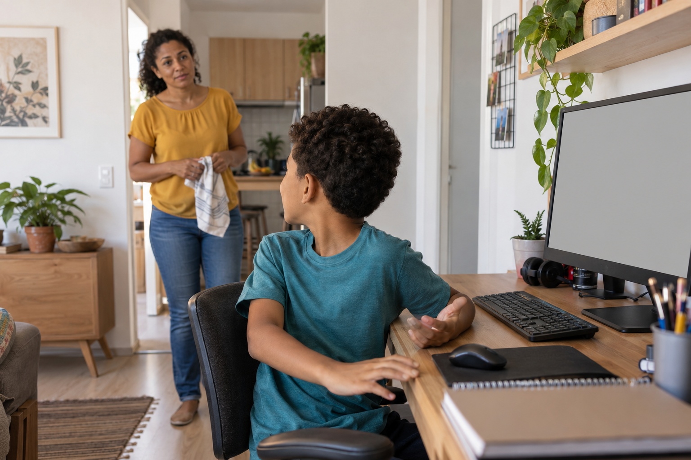
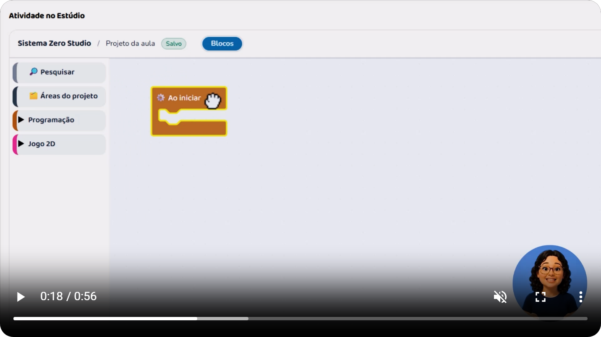
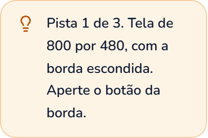
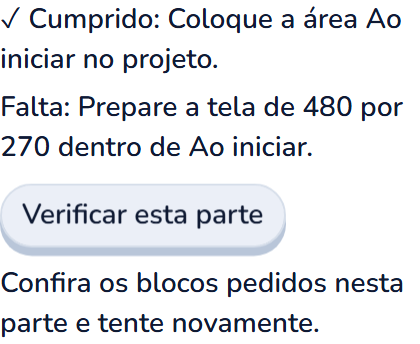
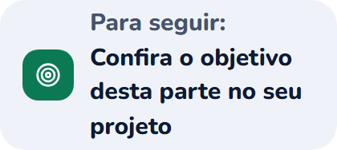

Antes de escolher
Seu filho pediu ajuda no jogo. Você não sabe programar.
Comece entendendo o que ele estava tentando fazer.

Seu filho pediu ajuda no jogo. Você não sabe programar.
Comece entendendo o que ele estava tentando fazer.

Pergunte: ‘O que você queria que acontecesse? E o que aconteceu?’
Ele pode explicar apontando a parte do jogo.
Veja este exemplo: a criança esperava vencer o monstrinho com um golpe.
Mas ele continua na tela depois do primeiro ataque.
A regra dá vinte pontos de vida ao monstrinho, e cada golpe tira dez.
São necessários dois golpes. Entender a regra explica o que aconteceu.
Para outras dúvidas, a criança precisa de orientação sobre a atividade.
Antes de escolher um curso, confira onde ela encontra essa ajuda.
Nas nossas aulas, dá para pausar e rever o vídeo.

As instruções com o botão ‘Ouvir’ também podem ser escutadas.
Algumas atividades trazem ‘Uma pista’. Nas partes do Estúdio que têm verificação, ‘Verificar esta parte’ confere os blocos pedidos.



Esses recursos ajudam a procurar o próximo passo.
Você pode ajudar seu filho a entender a dúvida e encontrar a orientação disponível.
Siga o perfil para conhecer melhor esse aprendizado.